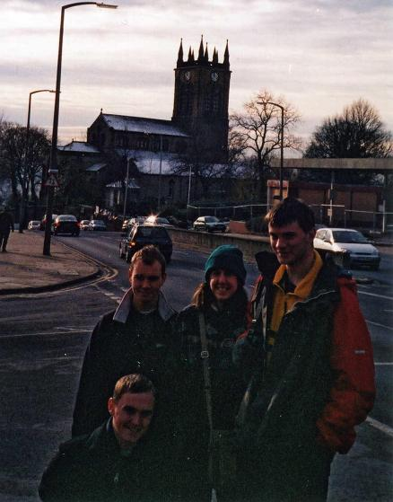
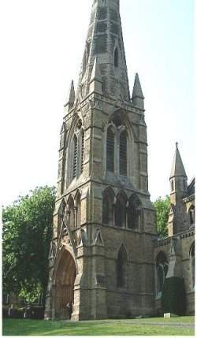
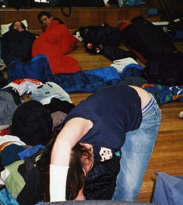
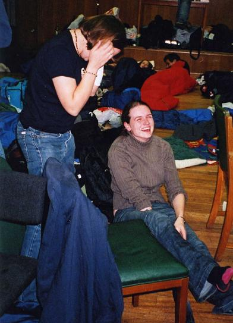
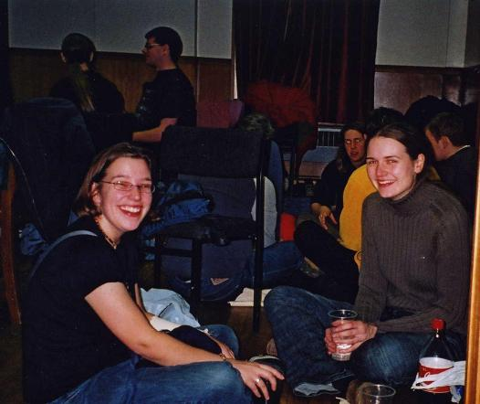
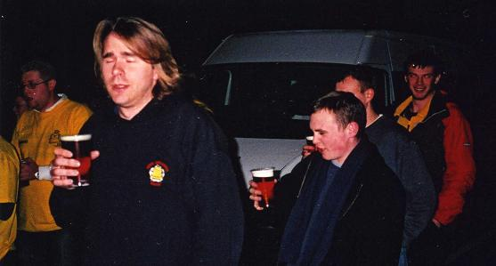
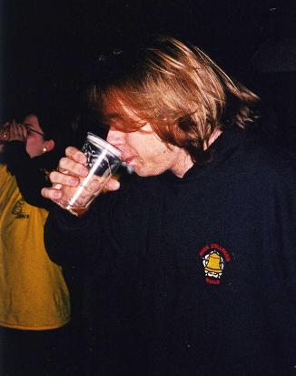
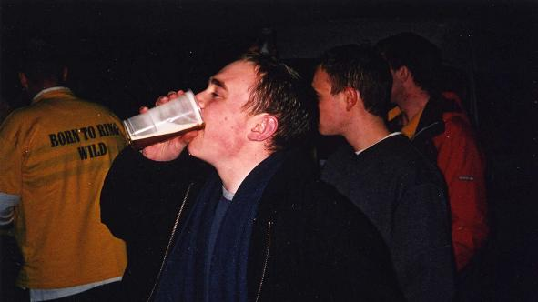

The report
This year's NUA was in Sheffield. Owing to the shocking reliability of trains these days, one of our team managed to miss the train and so had to be waited for by half of the team. Rebecca had a project that went on late and so had to join us on Saturday morning.
Getting there, we found that ringing had finished early and everyone had gone to the pub (surprise, surprise). So we made use of their guest ale and cider collections, their extravagently expensive cash machine and settled down to the usual jollities of meeting new and interesting people and taking the piss out of Mike.
I won't bother the reader with details about where we rang because that is available using the link below. However, I would like to pay tribute to Charlotte's excellent map-reading and public transport capabilities, without which we'd probably have had to buy a house and settle down there. We had to dispense with the striking competition on the basis that we couldn't get there and also Beighton and Norton, instead having lunch in Rotherham.
After we finished at the Cathedral we set out for take aways and doubled the annual turnover of the shop. So it came as a surprise that after everyone had gone, Kevin and Arthur were still waiting for the simplest pizza imaginable.
The evening brought the quiz, hosted by someone as eager to get to the pub as the rest of us. Complaints naturally about whether a hammer is known as a Birmingham screwdriver or spanner - I think the civilised world is agreed on this. But not Newcastle.
Then the boat race. Cunningly taking a place at the end of the line as far from the judges as possible, nobody seemed to notice that we were still drinking while the awards were being handed out. By some staggering coincidence, the umpire, winning team, losing team and host were from Sheffield. Hmmm.
To the pub until closing time, then back to the hall for more socialising, games and drinking, plus for me the chance to take advantage of some cold unwanted pizza. Also available to damage your health was Mavis's game (I'll explain it to you sometime if you're interested) and the Astral Pole game, where you can voluntarily dislocate one of your own limbs in the name of fun.
The following morning, we found that we had to clear out of the hall by 10 owing to some unforeseen double-booking. So while those organised enough went Sunday morning ringing, the rest of us set about to cleaning and clearing up after a party of 90 within the space of a couple of hours. That done, we went to the Fat Cat, in the heart of what used to be Industrial Sheffield, and now winner of several CAMRA awards for real ale. And while we're on the subject, why is it that ringers invariably go for bitter? Good food, then headed back to the station.
Photos

Arthur, Kevin, Char and David

Ranmoor

Looking forward to an early night?

The Astral Pole Game

-Did I just do that in public?
-Yes

After relocating her friend's limbs, Rebecca isn't convinced that the Astral Pole Game is for her
The Boat Race

Mike falls asleep waiting for the race to begin

Mmmm, the aroma of a fresh pint. I think I'll take my time and savour this one for as long as possible

Arthur then Kevin demonstrate how to do this properly